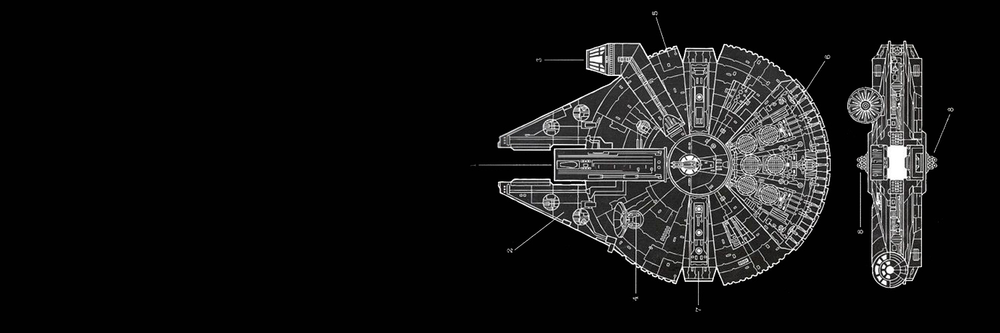

<!doctype html>


<html>  </html>


<head>
    
    <meta charset="UTF-8">
    <title>Zachary Moonilal - CART 211 </title>
    <link rel="stylesheet" href="css/style.css">   
</head>
<body></body>


<nav> 

<a href="index.html">bio</a>
<a href="readings.html">readings</a>
<a href="practice.html">practice</a>
<a href="projects.html">projects</a>

</nav>


<header> 

    <h1> Readings</h1>
   

</header>


<article>
    
<!-- Week 1 Article -->
    
    <h1> Week 1 - As We May Think </h1>
    
<p>
    
    <a href="https://www.theatlantic.com/magazine/archive/1945/07/as-we-may-think/303881/">As We May Think - Article</a>
    
</p>
<p> 
    
     <a href="pdf/moonilal_zachary_response01.pdf"> Reading Response Week 01</a>

</p> 

      
<!--WEEK 2 RESPONSE-->
   
    <h1> Week 2 - Writing the History of the Internet </h1>
<p>
    <a href="http://www.santoromano.com/readings/internethistory.pdf">Writing the History of the Internet - Article </a>
</p>

<p>
    <a href="pdf/moonilal_zachary_response02.pdf">Reading Response Week 02</a>


<!--WEEK 5 RESPONSE-->

    <h1> Week 5 - Web Work: A History of the Internet Art</h1>

<p>

    <a href="http://cyberhouse.arted.psu.edu/visualculture/history_net_art.pdf">Web Work: A History of Internet Art - Article</a>

</p>    
    
<p> 
    <a href="pdf/moonilal_zachary_respeonse03.pdf">Reading Response Week 05</a>
</p>

<!--WEEK 6 REPSONSE-->

    <h1> Week 6 - The GNU Manifesto </h1>
    
    <p>
        
        <a href="http://www.gnu.org/gnu/manifesto.html">The GNU Manifesto - Article</a>  
        
    </p>
    
    <p> 
    
    <a href="pdf/moonilal_zachary_response04.pdf"> Reading Response Week 06</a>
    
    </p>

</article>



<footer> 

<p> Concordia University Fall 2018</p>
<p> Student: Zachary Moonilal</p>
<p>Email: zach.astronomy@gmail.com</p>

</footer>


<html> </html>